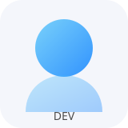

発表ポスター / 論文
これまでの発表資料、ポスター、論文をコンテスト別に一覧。ダウンロードリンクで簡単に共有できます。
資料一覧へMetaQuest × Unity × Simulation
FDSシミュレーション、VRアプリ開発、新校舎3Dモデル、発表ポスターまで。 研究開発の進捗と成果物を一元的に共有するためのポータルです。
共通スタイルでシンプルに構成された各ページから、詳細な記録・資料・データを確認できます。
これまでの発表資料、ポスター、論文をコンテスト別に一覧。ダウンロードリンクで簡単に共有できます。
資料一覧へFDS（Fire Dynamics Simulator）を用いた火災・煙の流体シミュレーションの記録と検証結果をまとめています。
シミュレーションへVR体験、FDS体験アプリ、消火訓練アプリ、NanoVDBアプリなど、各プロジェクトの開発記録を掲載。
アプリ一覧へ新校舎の高ポリから低ポリまで用途別の3Dモデルを整理し、サムネイルとファイルダウンロードを提供。
モデルギャラリーへプロジェクトを支えるメンバー。各自の専門領域と担当を簡潔に記載しています。

プロジェクトリーダー
各プロジェクトの進捗管理を担当。
モデリング・シミュレーション・アプリ開発を担当。
モデリング・アプリ開発担当
校舎モデルのポリゴン設計とLODを管理。
防災アプリの開発を担当。
モデリング担当
校舎モデルの中ポリモデルの作成を担当。
校舎モデルの低ポリモデルの作成を担当。
モデリング担当
校舎モデルのポリゴン設計とLODを管理。
校舎モデルの中ポリモデルの作成を担当。
モデリング担当
校舎モデルのポリゴン設計とLODを管理。
校舎モデルの中ポリモデルの作成を担当。
研究ログは各カテゴリーに紐づけて記録。課題・解決策・次のアクションを最小限のテキストで整理しています。
2025年11月: 新校舎高ポリ1~4階完成。
2025年12月: 校舎モデルのLODとテクスチャ差し替えを計画中。軽量バージョンのGLB書き出しを整備予定。